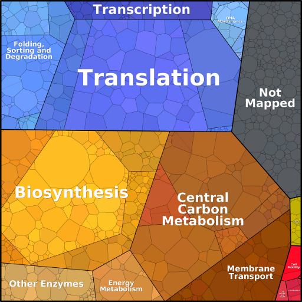

Proteomaps data download

Back to main page
Downloads
- Protein functional hierarchy
The functional hierarchy is based on KEGG's functional hierarchy, but
has been manually adapted. In the downloadable file, the same KEGG
Orthology ID may still appear in several functional categories.
Hierarchy tree |
Hierarchy tree (levels 1-3) |
Organism information |
ID mapping files
- Abundance values for protein categories
Abundance values for single proteins can be downloaded from the proteomaps home page.
Here you can download abundance values for protein categories for a selection of data sets.
In the files, protein abundances (possibly , weighted by protein chain lengths) are
normalised by their total value. Sub-categories (first column) are
marked by "-" (2nd level categories) and "--" (3rd level categories).
Protein abundances |
Protein abundances (length-weighted)
- Protein abundance ratios between functional categories
Protein abundances are weighted by protein chain lengths.
Abundance ratios |
Abundance ratios (length-weighted)
- Protein abundance ratios (ranges obtained from permutation test)
Instead of choosing, for each protein, the primary functional
annotation, one of the possible annotations for this protein was
chosen randomly. From 1000 such subsampled KEGG Orthology trees, we
can estimate how different choices of the primary annotations would
affect the weighted abundances of functional categories. The files
contain, for each abundance value, the 10% quantile, the median, and
the 90% quantile for a selection of data sets.
Abundance quantiles |
Abundance quantiles (length-weighted)
|
Main |
Help |
Method |
Data |
Reference |
Contact